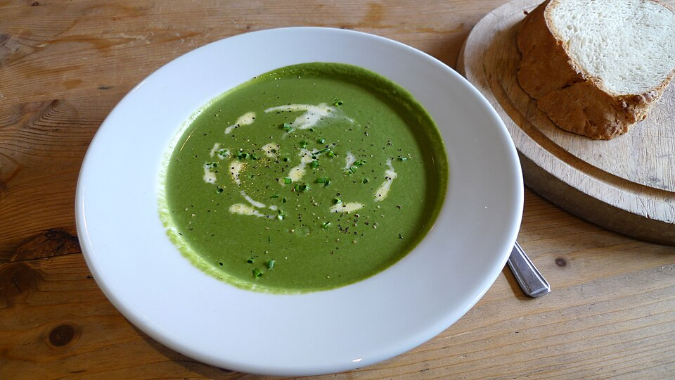

Spinach Soup (4p)

By tm under CC BY-SA 2.0
Description
It's spinach soup, innit.
Ingredients
- 4 eggs
- 1tblsp olive oil
- 300g frozen spinach
- 8dl water
- 1 cube vegetable stock
- 50g finely chopped leek
- 1dl crème fraîche
- 0.5tsp salt
- 0.25tsp pepper
Steps
- Boil the eggs to your preference
- Chop the leek and add it to a hot pot with oil and thawed spinach, let it fry for a few minutes
- Add water with stock, and let boil for five minutes
- Add crème fraîche and eaven out the soup witha a mixer
- Add salt and pepper and serve with eggs
Home